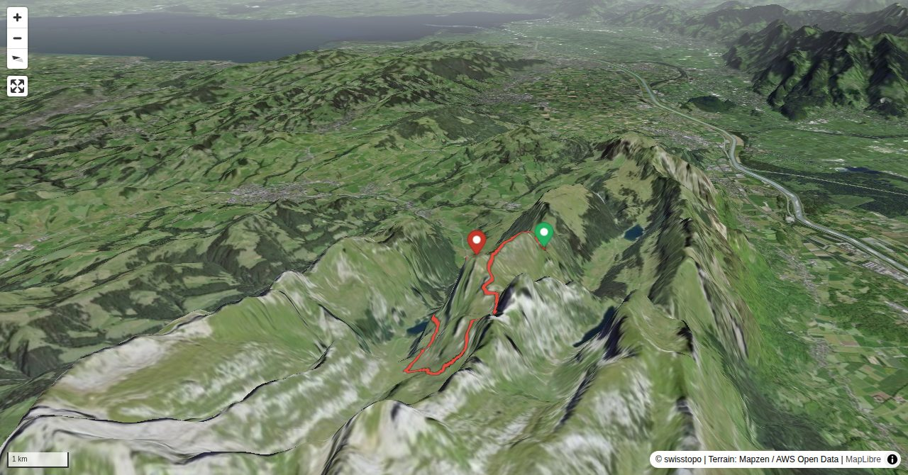

On Marwees nature and interesting trails built by courageous builders make for a hiking tour which satisfies every wish an alpine hiker might have: impressive views deep down, a boost of adrenalin on the steep ascent to Bogartenlücke or the feeling of flying when balancing on the Marwees ridge. East of Bogartenlücke stands a huge boulder called Bogartenmannli, which appears to guard the col. The view from the summit goes from Hoher Kasten to Stauberen and Kreuzberge against the backdrop of the Rätikon and Vorarlberg mountain ranges. Looking northward, Lake of Constance sparkles in the distance, while in front the hilly landscape of Appenzell and Thurgau is spread out.
The Bogartenmannli rock tower at Bogartenlücke can be climbed with a few moves (III, state summer 2024 no more fixed rope).
Quick Facts
| Summit elevation | 1990 m |
|---|---|
| Difficulty | SAC T4- Check the route notes below for terrain and commitment level. Guide |
| Trailhead | Wasserauen, Bahnhof |
| Region | Northern Alps |
| Canton | Appenzell Innerrhoden |
| Distance | 15.0 km (loop) |
| Total ascent | ~1236 m |
| Elevation range | 869-1990 m |
| Route sources | SAC Route Portal |
Photos


All photos: SAC Route Portal
Planning
i
i
sac_scale (precise T1–T6) with
swissTLM3D Wanderwegart
fallback where OSM is silent (coarser T2/T3 and T4+ buckets).
Coverage: OSM 92.2% · swisstopo 7.4% · unknown 0.0%.Elevations computed from the inlined GPX track (SwissTopo height API).
Loading forecast…
Start: Wasserauen, Bahnhof (1683 m)
Route returns to Wasserauen, Bahnhof.
3D Terrain View

Route Details
Traverse east-west from Wasserauen
- Wasserauen–Bogartenlücke–Marwees: 4 h Marwees–Meglisalp–Wasserauen: 2½ h
Terrain & safety
Until Bogartenlücke the difficulty is T2. Then the trail to Marwees is marked white-blue-white (alpine hiking trail). An information board details the dangers of this stretch. Granted, the trail is steep, and the traverse to a grassy terrace may be precarious or even impassable, especially when wet or snow-covered. However, in good conditions, with appropriate gear and surefootedness the hike on the ridge should be a real pleasure (low T4). Some exposed passages are also found on the descent on Schrennenweg from Meglisalp to Wasserauen, but they are well equipped (T3).
Source: SAC Route Portal
Field Reference
| Trailhead | Wasserauen, Bahnhof | 47.26490, 9.42300 |
|---|---|---|
| Summit | Marwees (1990 m) | 47.26131, 9.40395 |
Coordinates are WGS84 decimal degrees (lat, lon). Emergency: 112 (general) or 1414 (Rega air rescue). Page URL: